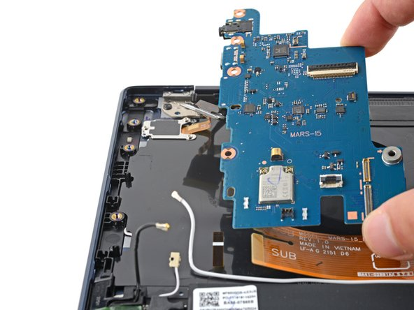

Find the exact laptop manual and run preboot diagnostics
Compare Lenovo, Dell, HP, ASUS, Samsung, Acer and Framework by model, removable parts and diagnostic tools.
Keep model, architecture and operating system as separate fields
Windows and Linux can run on the same PC. A Galaxy Book is a Samsung laptop family with model-specific firmware and hardware. Intel versus ARM changes recovery media, while soldered versus removable memory changes the physical job. Record full model, product code, hardware revision where relevant, architecture, operating system, power adapter and customer complaint. Keep serial numbers in the service record and leave them out of public photos.

Photo by Sarah Westberg for iFixit, scaled with on-page callouts. Original repair photograph · CC BY-NC-SA 3.0.

Photo by Spencer Day and iFixit contributors, with added labels. Original guide · CC BY-NC-SA 3.0.
HP Support shows how to run its hardware diagnostics in UEFI.
Compare the actual tool and the part before opening
| Example family | Find these first | Evidence to record |
|---|---|---|
| Lenovo ThinkPad T480, 20L5/20L6 | Hardware Maintenance Manual, correct FRU and UEFI diagnostics or documented bootable equivalent. | Battery isolation sequence, removable parts and any reported diagnostic code. |
| Dell Latitude | Exact service manual and the F12 Diagnostics entry on supported models. Look up the meaning of the model’s LED code. | Stage reached, ePSA or SupportAssist result and validation code when present. |
| HP EliteBook or ProBook | Product-number maintenance guide and installed HP Hardware Diagnostics UEFI, commonly via Esc then F2. | Targeted component test, failure ID when reported and configuration. |
| ASUS Zenbook, Vivobook or ROG | Find exact model and whether it supports System Diagnostics in UEFI. Note differences between variants with the same marketing name. | Supported tests, result and fastener or cable layout. |
| Samsung Galaxy Book | Use the complete NP product code and region-specific guide. Compare Galaxy Book revisions and convertible hinge designs. | Authorized parts list, any disassembly prerequisites and installed architecture. |
| Acer Aspire, Swift or Chromebook | Find model-specific docs with the model or SNID privately. A Chromebook uses ChromeOS tools. | Exact board or case family, documented test and part availability. |
| Framework Laptop 13 | Find the Mainboard generation. Use the port capability matrix and the matching guide. | Component part number, board revision and physical slot used. |
Make a two-machine comparison
On a known-good or donated machine, reproduce the symptom before running a targeted test. Record whether power indicators appear, firmware can enter setup, the system sees its drive, and an external display behaves as expected. Match two replaceable parts against the manual. Repeat on a different model or use a documented case. A diagnostics pass is one observation. An intermittent fault needs the same operating condition that exposed it.
Use P129 · Diagnose Lenovo Yoga Book display and keyboard faults for the Lenovo Yoga Book’s display and input paths and P130 · Triage and service a Dell Latitude 5420 for an exact Dell Latitude case. Use P117 · Diagnose a Windows laptop that reaches firmware but fails to boot or P118 · Use a Linux live USB to isolate a laptop hardware fault after POST succeeds, P119 · Triage a MacBook and prove which module needs service for a Mac and P120 · Troubleshoot a Chromebook with its model and management context for a Chromebook. P123 · Find a missing enable or power-good signal before swapping a board is the board-level branch after external power and basic hardware tests.
Related lesson and source material
T57 · How laptop power, firmware, storage and operating systems meet.
- ThinkPad T480 maintenance manual
- Dell’s no-power, no-POST, no-boot and no-video guide
- HP PC Hardware Diagnostics
- ASUS UEFI diagnostic documentation
- Samsung Galaxy Book self-repair entry
- Acer laptop or Chromebook manuals by model
- Framework model-specific guides
- Samsung Galaxy Book Pro 360 15-inch daughterboard service photo sequence